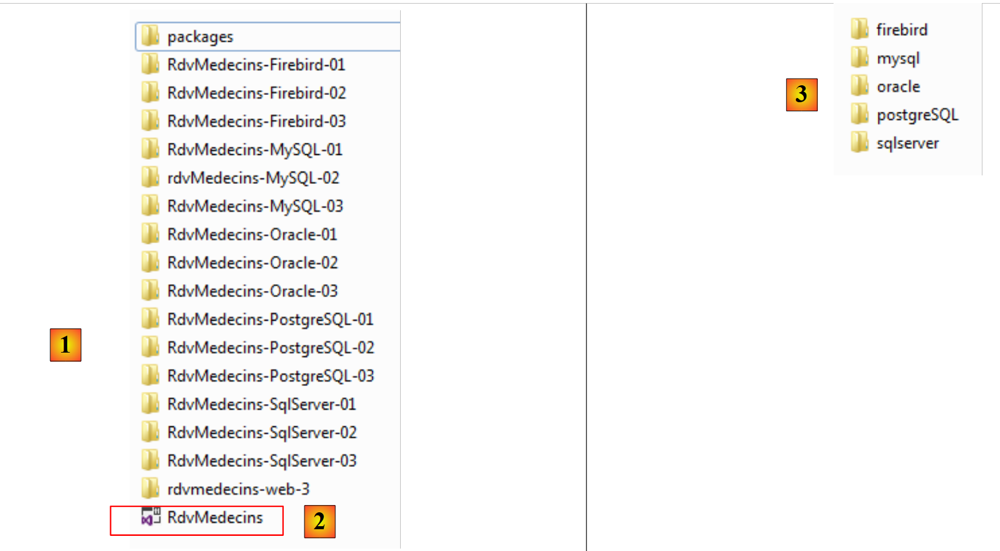

1. Einführung
1.1. Ziel
Das PDF des Dokuments ist |HIER| verfügbar.
Die Beispiele im Dokument sind |HIER| verfügbar.
Entity Framework ist ein ORM (Object Relational Mapper), das ursprünglich von Microsoft entwickelt wurde und nun als Open Source verfügbar ist [Juli 2012, http://entityframework.codeplex.com/]. In einem ASP.NET-Kurs verwende ich für eine bestimmte Webanwendung die folgende Architektur:
 |
Das NHibernate-Framework [http://sourceforge.net/projects/nhibernate/] ist ein ORM, das bereits vor Entity Framework existierte. Es handelt sich um ein ausgereiftes Produkt, das die Anbindung an verschiedene Datenbanken ermöglicht. Das ORM trennt die [DAO]-Schicht (Data Access Objects) vom ADO.NET-Connector. Es ist das ORM, das SQL-Befehle an den Connector sendet. Die [DAO]-Schicht wiederum nutzt die vom ORM bereitgestellte Schnittstelle. Diese Schnittstelle ist vom ORM abhängig. Daher erfordert ein Wechsel des ORM eine Änderung der [DAO]-Schicht.
Diese Architektur ist widerstandsfähig gegenüber Änderungen am DBMS.
Wenn die [DAO]-Schicht direkt mit dem ADO.NET-Konnektor verbunden ist, wirkt sich eine Änderung des DBMS auf die [DAO]-Schicht aus:
- nicht alle DBMS verfügen über dieselben Datentypen;
- DBMS verwenden nicht dieselben Strategien zur Generierung von Primärschlüsseln;
- DBMS verwenden proprietäres SQL;
- die [DAO]-Schicht hat möglicherweise Bibliotheken verwendet, die an ein bestimmtes DBMS gebunden sind;
- ...
Wenn ein ORM mit dem ADO.NET-Konnektor verbunden ist, erfordert ein Wechsel des DBMS lediglich die Konfiguration des ORM, um es an das neue DBMS anzupassen. Die [DAO]-Schicht bleibt unverändert.
Das Spring.NET-Framework [http://www.springframework.net/index.html] gewährleistet die Integration der Schichten einer Anwendung. Oben:
- Die ASP.NET-Anwendung fordert von Spring eine Referenz auf die [DAO]-Schicht an;
- Spring verwendet eine Konfigurationsdatei, um diese Schicht zu erstellen und die Referenz zurückzugeben.
Diese Architektur bewältigt Änderungen an den Schichten gut, solange die Schichten weiterhin dieselbe Schnittstelle bereitstellen. Eine Änderung der obigen [DAO]-Schicht erfordert eine Anpassung der Spring-Konfigurationsdatei, sodass die neue Schicht anstelle der alten instanziiert wird. Da beide Schichten dieselbe Schnittstelle implementieren und die ASP.NET-Schicht diese Schnittstelle nutzt, bleibt die ASP.NET-Schicht unverändert.
Wir haben hier also eine flexible und skalierbare Architektur. Um dies zu veranschaulichen, werden wir das NHibernate-ORM durch Entity Framework 5 ersetzen:
 |
Wir werden in mehreren Schritten vorgehen:
- Wir werden Entity Framework 5 mit verschiedenen DBMS untersuchen;
- wir werden die [DAO2]-Schicht erstellen;
- wir werden die bestehende ASP.NET-Anwendung mit dieser neuen [DAO]-Schicht verbinden.
1.2. Verwendete Tools
Die Tests wurden auf einem HP EliteBook-Laptop mit Windows 7 Pro, einem Intel Core i7-Prozessor und 8 GB RAM durchgeführt. Als Entwicklungssprache verwenden wir C#.
In diesem Dokument werden die folgenden Tools verwendet, die alle kostenlos verfügbar sind:
Entwicklungs-IDEs:
- Visual Studio Express for Desktop 2012 [http://www.microsoft.com/visualstudio/fra/downloads];
- Visual Studio Express for Web 2012 [http://www.microsoft.com/visualstudio/fra/downloads].
Das DBMS SQL Server Express 2012:
- das DBMS: [http://www.microsoft.com/fr-fr/download/details.aspx?id=29062];
- ein Verwaltungstool: EMS SQL Manager for SQL Server Freeware [http://www.sqlmanager.net/fr/products/mssql/manager/download].
Das DBMS Oracle Database Express Edition 11g Release 2:
- das DBMS: [http://www.oracle.com/technetwork/products/express-edition/downloads/index.html];
- ein Verwaltungstool: EMS SQL Manager for Oracle Freeware [http://www.sqlmanager.net/fr/products/oracle/manager/download];
- ein Oracle-Client für .NET: ODAC 11.2 Release 5 (11.2.0.3.20) mit Oracle Developer Tools für Visual Studio: [http://www.oracle.com/technetwork/developer-tools/visual-studio/downloads/index.html].
Das DBMS MySQL 5.5.28:
- das DBMS: [http://dev.mysql.com/downloads/];
- ein Verwaltungstool: EMS SQL Manager for MySQL Freeware [http://www.sqlmanager.net/fr/products/mysql/manager/download].
Das DBMS PostgreSQL 9.2.1:
- das DBMS: [http://www.enterprisedb.com/products-services-training/pgdownload#windows];
- ein Verwaltungstool: EMS SQL Manager for PostgreSQL Freeware [http://www.sqlmanager.net/fr/products/postgresql/manager/download].
Das DBMS Firebird 2.1:
- das DBMS: [http://www.firebirdsql.org/en/firebird-2-1-5/];
- ein Verwaltungstool: EMS SQL Manager für InterBase/Firebird Freeware [http://www.sqlmanager.net/fr/products/ibfb/manager/download].
LINQPad 4: ein Tool zum Erlernen von LINQ (Language INtegrated Query) [http://www.linqpad.net/, http://www.linqpad.net/GetFile.aspx?LINQPad4.zip].
1.3. Quellcode
Der Quellcode für die folgenden Beispiele ist |HIER| verfügbar.
 |
Es handelt sich um Visual Studio 2012-Projekte [1], die in einer Lösung [2] zusammengefasst sind. Im Ordner [databases] befindet sich für jedes verwendete DBMS ein eigener Ordner. Diese Ordner enthalten die SQL-Skripte zur Erstellung der Beispieldatenbank für die jeweiligen DBMS.
1.4. Der Ansatz
Um mehr über Entity Framework 5 Code First zu erfahren, habe ich mit dem folgenden Buch begonnen: „Professional ASP.NET MVC 3“ von Jon Galloway, Phil Haack, Brad Wilson und Scott Allen, erschienen bei Wrox. In der Beispielanwendung des Buches verwenden die Autoren Entity Framework (EF) als ORM. Da ich damit nicht vertraut war, habe ich im Internet recherchiert, um mehr darüber zu erfahren. Ich stellte fest, dass die aktuellste Version EF 5 war und dass es Inkompatibilitäten mit EF 4 gab, da der Code aus dem Buch bei Tests mit EF 5 Kompilierungsfehler verursachte.
Dann stellte ich fest, dass es mehrere Möglichkeiten gibt, EF zu verwenden:
- Model First: Es gibt viele Artikel zu diesem Ansatz für EF, zum Beispiel [http://msdn.microsoft.com/en-us/data/ff830362.aspx]. Dieser Artikel beginnt wie folgt:
Zusammenfassung: In diesem Artikel befassen wir uns mit dem neuen Entity Framework 4, das mit .NET Framework 4 und Visual Studio 2010 ausgeliefert wird. Ich werde erläutern, wie Sie die Nutzung aus einer Model-First-Perspektive angehen können, basierend auf der Prämisse, dass Sie das Datenbankdesign von einem Modell aus steuern und sowohl Ihre Datenbank als auch Ihre Datenzugriffsschicht deklarativ aus diesem Modell aufbauen können. Das Modell enthält die Beschreibung Ihrer Daten, dargestellt als Entitäten und Beziehungen, und bietet einen leistungsstarken Ansatz für die Arbeit mit ADO.NET sowie eine Trennung der Anliegen durch eine Abstraktion zwischen einer Modelldefinition und ihrer Implementierung.
Ein ORM überbrückt die Lücke zwischen Datenbanktabellen und Klassen.
 |
Oben,
- links von der EF5-Schicht befinden sich Objekte, die wir Entitäten nennen;
- rechts von der EF5-Schicht befinden sich Datenbanktabellen.
 |
Die [DAO]-Schicht arbeitet mit Objekten, die Datenbanktabellen repräsentieren. Diese Objekte sind in einem Persistenzkontext zusammengefasst und werden als Entitäten (Entity) bezeichnet. Änderungen an den Entitäten werden über das ORM in den Datenbanktabellen übernommen (Einfügen, Ändern, Löschen). Zusätzlich verwendet die [DAO]-Schicht ein Abfragesprachen , das LINQ to Entities (Language-Integrated Query) genannt wird und Entitäten statt Tabellen abfragt. Der Model-First-Ansatz beinhaltet die Erstellung von Entitäten mithilfe eines grafischen Tools. Sie definieren jede Entität und die Beziehungen, die sie mit anderen verbinden. Sobald dies geschehen ist, generiert das Tool:
- die verschiedenen Klassen, die die grafisch erstellten Entitäten widerspiegeln;
- die DDL (Data Definition Language), die zur Generierung der Datenbank verwendet wird.
Die Beispiele, die ich für diese Methode gefunden habe, verwendeten alle Visual Studio 2010 Professional und ein Modell namens ADO.NET Entity Data Model. Ich konnte dieses Modell zwar mit Visual Studio 2010 Professional testen, doch als ich zu Visual Studio Express 2012 wechselte – meiner eigentlichen Zielumgebung –, stellte ich fest, dass dieses Modell dort nicht mehr verfügbar war. Daher habe ich diesen Ansatz aufgegeben.
- Database First: Ausgangspunkt für diese Methode ist eine vorhandene Datenbank. Von dort aus generiert ein Tool automatisch die Entitätsmodelle für die Datenbanktabellen. Auch hier verwenden die Beispiele, die ich gefunden habe, wie beispielsweise [http://msdn.microsoft.com/en-us/data/gg685489.aspx], Visual Studio 2010 Professional und das ADO.NET Entity Data Model. Daher habe ich auch diesen Ansatz aufgegeben, obwohl er mir am besten gefiel. Um zu bestimmen, welche Entitäten als Darstellungen einer bestehenden Datenbank verwendet werden sollten, war es naheliegend, mit einem Tool zu beginnen, das diese generiert.
- Code First: Man schreibt die Klassen, aus denen die Entitäten bestehen, selbst. Dies erfordert zumindest ein grundlegendes Verständnis der Funktionsweise von EF. Diesen Ansatz habe ich gewählt, da er mit Visual Studio Express 2012 kompatibel war.
Vor diesem Hintergrund ging ich wie folgt vor:
- Ich habe Code für SQL Server Express 2012 geschrieben, da dies das DBMS ist, für das die meisten Beispiele verfügbar sind;
- sobald dieser Code debuggt war, habe ich ihn auf die anderen DBMS (Firebird, Oracle, MySQL, PostgreSQL) portiert.
Hier werden wir anders vorgehen. Ich werde zunächst den gesamten Code für SQL Server beschreiben und anschließend erläutern, wie er auf die anderen DBMS portiert wurde. Bei diesem Portierungsprozess wurden folgende Anpassungen vorgenommen:
- Datenbanken verfügen über proprietäre Funktionen. Insbesondere habe ich Trigger verwendet, um den Inhalt bestimmter Spalten automatisch zu generieren. Jedes DBMS hat seine eigene Art, damit umzugehen;
- die Bildentitäten in den Tabellen können sich ändern, dies ist jedoch beabsichtigt. Ich hätte Entitäten wählen können, die für alle Datenbanken geeignet sind;
- Der ADO.NET-Treiber für das DBMS ändert sich;
- die Verbindungszeichenfolge zum DBMS ändert sich.
Der gewählte Ansatz ist wie folgt:
- Entitäts-/Datenbank-Zuordnung. Befüllen der Datenbank;
- Auslesen der Datenbank mithilfe von LINQ-Abfragen;
- LINQPad, ein Tool zum Erlernen von LINQ;
- Hinzufügen, Löschen und Ändern von Entitäten;
- Verwaltung des parallelen Zugriffs;
- In einer Transaktion gespeicherter Persistenzkontext;
- Ändern einer Entität außerhalb des Persistenzkontexts;
- Eager- und Lazy-Loading;
- Aufbau der [DAO]-Schicht;
- Aufbau der ASP.NET-Webschicht.
1.5. Zielgruppe
Dieses Dokument richtet sich an Anfänger.
Dieses Dokument ist kein Kurs zu Entity Framework 5 Code First. Dazu empfiehlt sich beispielsweise die Lektüre von „Programming Entity Framework: Code First“ von Julie Lerman und Rowan Miller, erschienen bei O'Reilly. Dieses Dokument erhebt keinen Anspruch auf Vollständigkeit, sondern skizziert lediglich den Ansatz, den ich zum Verständnis dieses ORM verwendet habe. Ich glaube, dass dieser Ansatz für andere, die mit EF5 arbeiten, nützlich sein kann. Mein Ziel geht nicht über diesen Rahmen hinaus.
1.6. Verwandte Artikel auf developpez.com
Das oben genannte Buch dient als Referenz. Auf developpez.com gibt es auch Artikel, die sich speziell mit Entity Framework befassen. Hier sind einige davon:
- „Entity Framework – der Code-First-Ansatz“, Juni 2012 – von Reward. Dieser Artikel und das vorliegende Dokument überschneiden sich teilweise. Er geht jedoch auf bestimmte Punkte näher ein, insbesondere hinsichtlich der „Zuordnung“ von Klassenvererbung <--> Tabellen;
- „Einführung in Entity Framework“, Dezember 2008, von Paul Musso;
- „Erstellen eines Klassenmodells mit Entity Framework“, April 2009, von Jérôme Lambert;
- „Leistungsmessung von Linq to SQL im Vergleich zu SQL und Entity Framework“, Juni 2011, von Immobilis;
- „Entity Framework Code First: Automatische Migration aktivieren“, Juni 2012, von Hinault Romaric;
- „Erstellen einer CRUD-Anwendung mit WebMatrix, Razor und Entity Framework“, Mai 2012, von Hinault Romaric;
- „Entity Framework: Code-First-Migrationen erkunden“, Juni 2012, von Hinault Romaric;
Wie oben erwähnt, ist dieses Dokument nicht vollständig. Lesern empfiehlt es sich, die oben aufgeführten Artikel zu konsultieren, um bestimmte Lücken zu schließen. Meine Recherche ist möglicherweise unvollständig. Ich entschuldige mich bei allen Autoren, die ich möglicherweise übersehen habe.